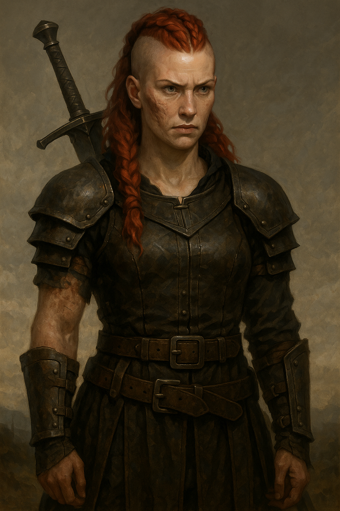

Branna Emberfall

Meteo Attuale
Età
38 anni
Razza
Umana
Professione:
Ex comandante militare, ora mercenaria itinerante
Aspetto fisico:
Alta e robusta, postura sempre vigile.
Capelli rosso rame rasati ai lati e intrecciati.
Pelle segnata da bruciature sul fianco sinistro.
Occhi grigio fumo. Armatura di cuoio con inserti di ferro meteoritico.
Porta la spada "Cindervow".
Personalità:
Poche parole, granitico senso dell’onore.
Diretto, protettiva verso i più deboli.
Porta il peso di chi ha visto troppi addii.
Background:
Cresciuta come contadina, poi Guardie Cremisi di Tyr Vhalor.
Tradita, ora mercenaria sotto falso nome.
Poteri/Abilità:
- Cindervow: fende illusioni e smaschera bugie.
- Maestra di Combattimento: esperta di duelli.
- Volontà di Ferro: resiste a magie mentali.
- Segugio del Vero: percepisce menzogne e imboscate.